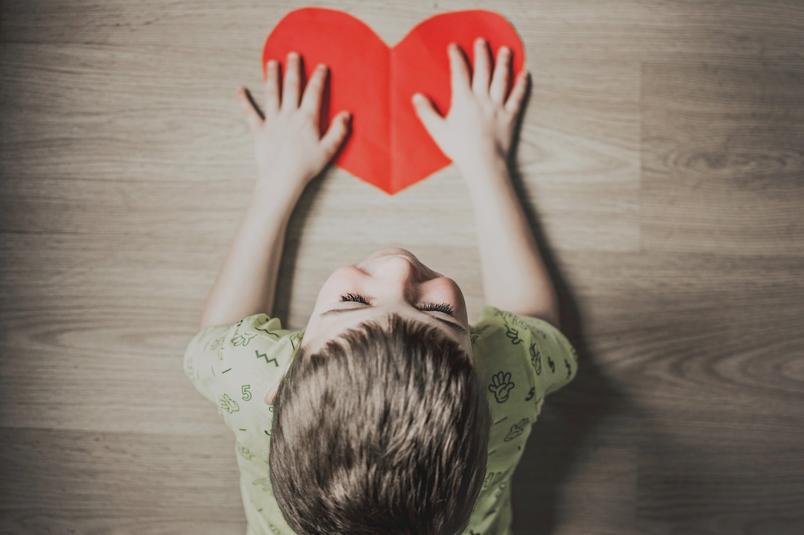

Fundacja Małe Wielkie Serce to fundacja działająca z myślą o dzieciach, które najbardziej potrzebują wsparcia i troski. Jej misją jest niesienie realnej pomocy najmłodszym z rodzin znajdujących się w trudnej sytuacji życiowej – ubóstwie, wykluczeniu czy braku stabilności.
Poprzez swoją działalność, fundacja otacza dzieci ciepłem, troską i miłością – tym, czego często brakuje im na co dzień. Organizujemy zbiórki, akcje charytatywne, zajęcia edukacyjne i integracyjne, a także zapewniamy wsparcie materialne i emocjonalne. Wszystko po to, by każde dziecko – niezależnie od pochodzenia – mogło rozwijać swoje skrzydła, marzyć i czuć się bezpieczne.
Małe Wielkie Serce to więcej niż pomoc – to gest solidarności, miejsce, gdzie liczy się każde dziecięce marzenie i każda łza może zamienić się w uśmiech.
